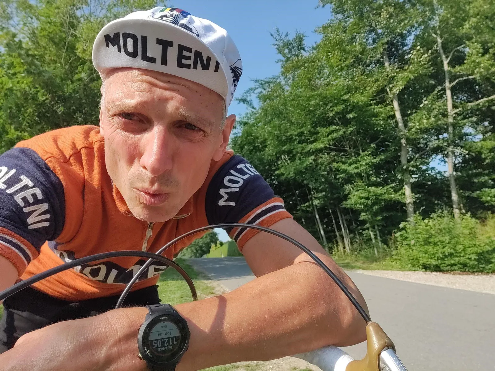
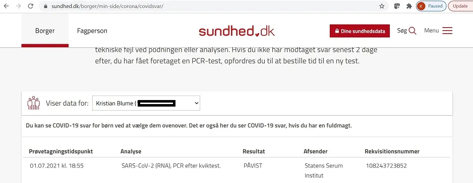
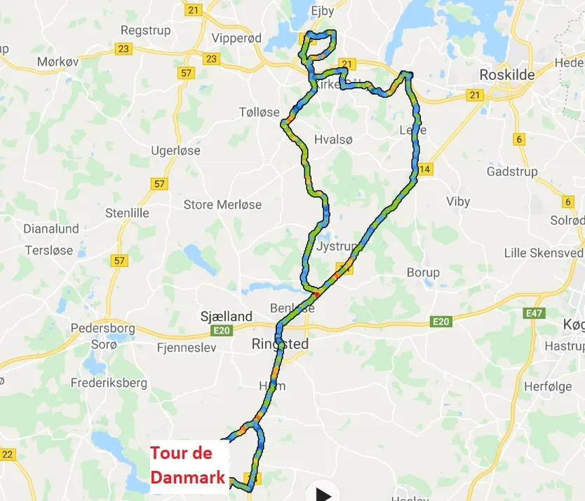
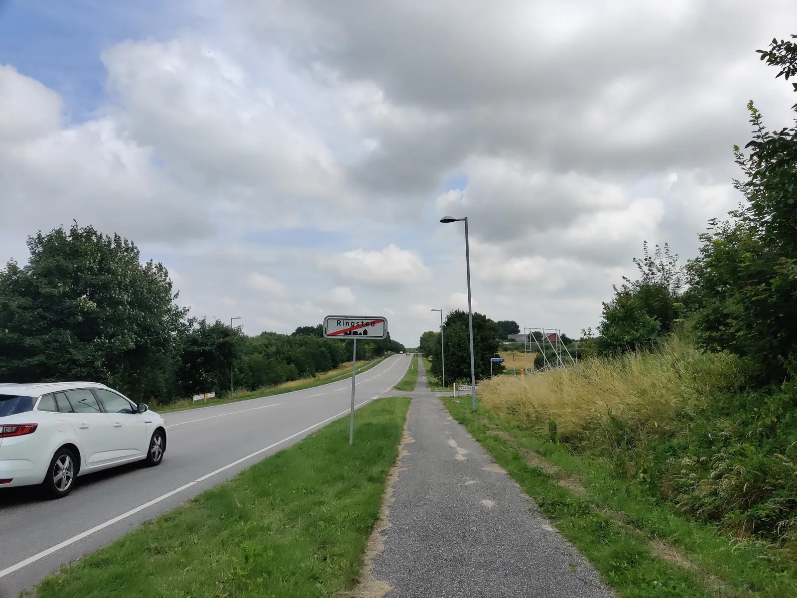
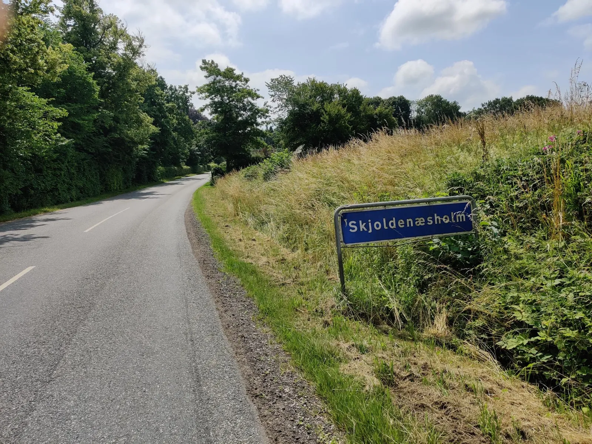
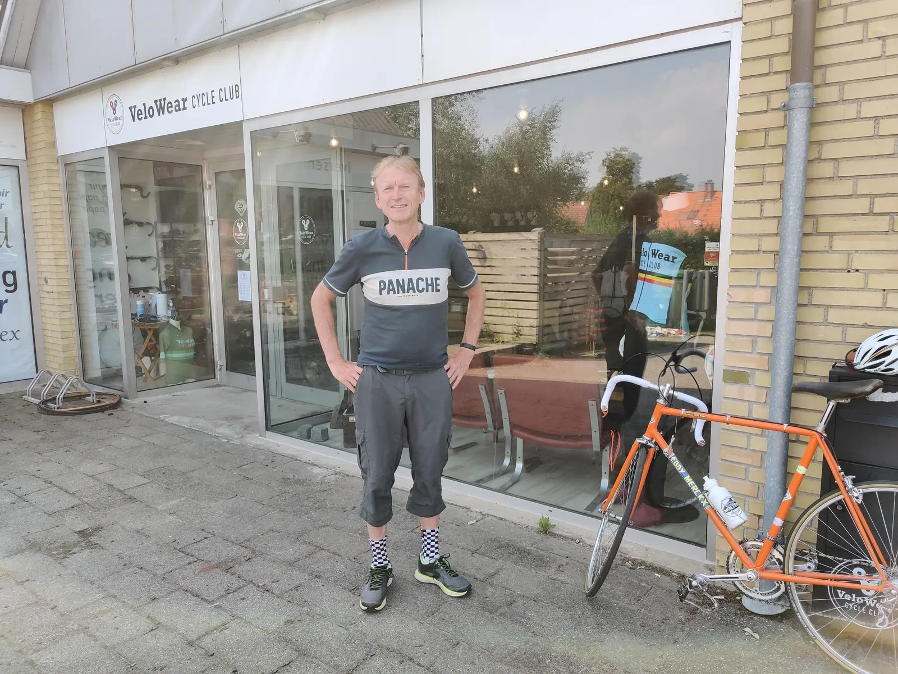
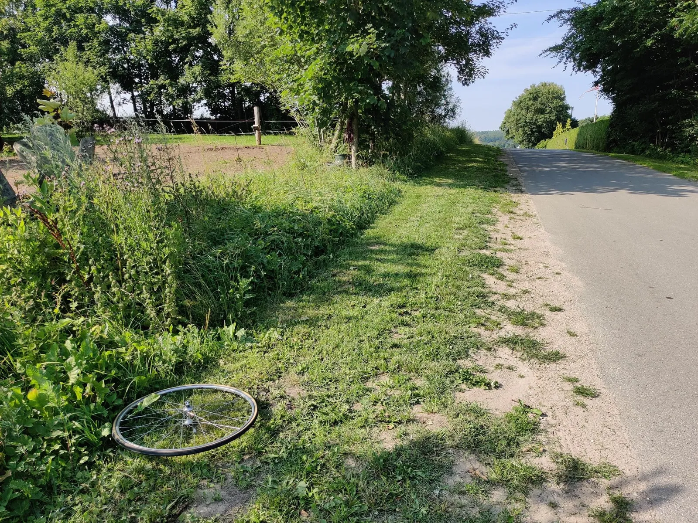
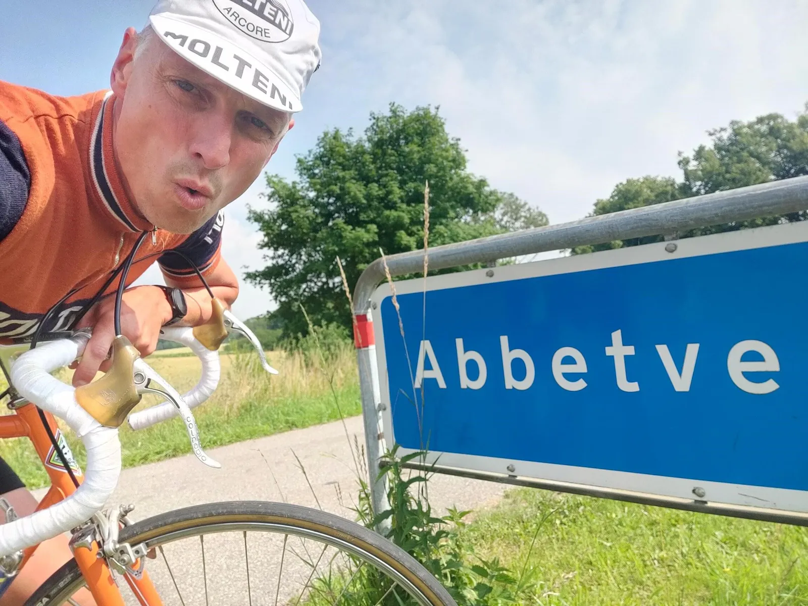
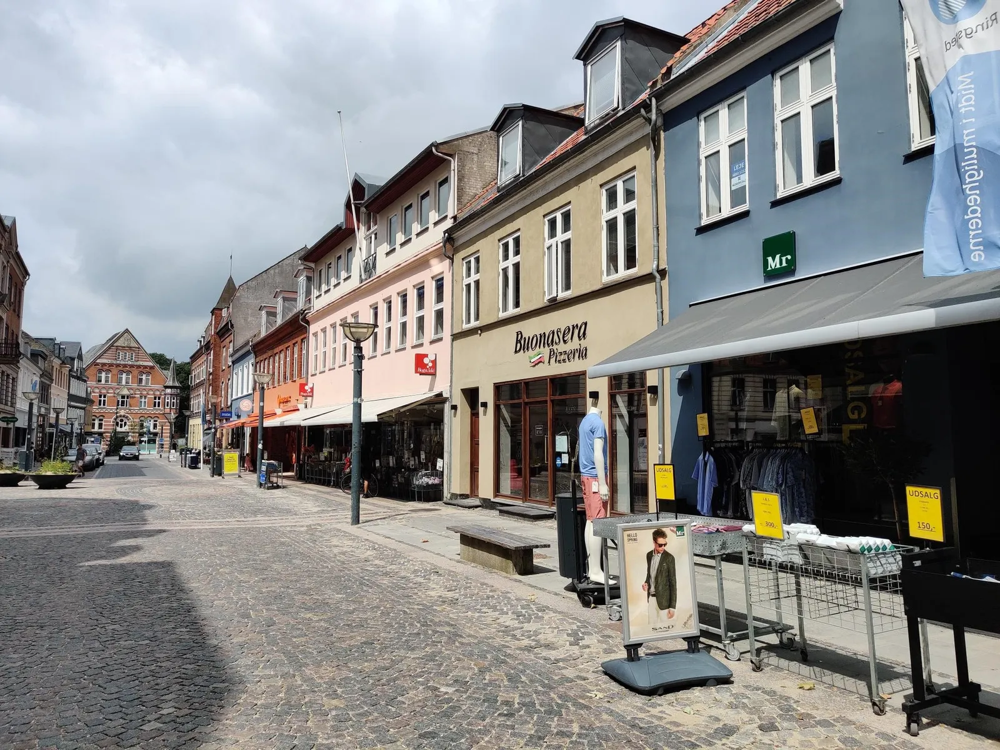

16. etape: Molteni pizzaspurtsejr og udmarvende Corona-comeback!

Nogle dage er det en sejr i sig selv, at kæmpe sig hjem med Gruppettoen. Spørg bare Cavendish efter Tignes-etapen. Eller Kristian Blume efter 16.etape i Tour de Danmark.
På årets 6. etape – den famøse fedtbrænds-etape til Faxe – var det ikke nemlig ikke kun rygende Peugeot-fedt, der kradsede i halsen.

Coronakontaminering
På sidevindsstykket mellem kalkbruddet ved Stevns klint og Stevnsfortet, havde pålandsvinden angiveligt været kontamineret med den farlige hurtigtsmittende svenske variant, B.117.SE. Således udviklede Kristian Blume allerede efter etapen symptomer under massagen og få timer efter kom svaret: SARS-CoV-2 PÅVIST.
Efter samtale med Smitteopsopringen, der kunne meddele, at også 3 lokale jollefiskere og 2 fossiljægere i kalkbruddet var registreret positive samme eftermiddag, blev diverse modforanstaltninger sat i værk. Blandt andet blev hele Falsterbo/Trelleborg området sprøjtet fra luften med håndsprit af en eskardrille danske F-16 jagere, til stor jubel for vore svenske naboer, der straks forsamledes med dunke til opsamling af de dyre dråber.

Mere alvorligt blev Kristian dog sat i karantæne i holdbussens brusekabine efter gældende regler (symptomfri + 48 timer). Et hårdt slag for holdets hygiejne, men heldigvis med mulighed for at genindtræde senere i løbet.
Det er lidt ligesom i de glade EPO-dage, udtaler holdlæge Finn Birk. Når målingerne røg gennem loftet, var der lige afkøling en uges tid, så hæmotokritten kom under 60 igen. Vi er dog glade for, at Kristians karantæne nu er afsluttet. Vi er løbet tør for Wunderbaum i bussen og dunsten var sgu blevet lidt stram. Truckervask og etapeløb rimer ikke rigtigt..

Udbrudsbananas, igen-igen – og krisekaffe hos VeloWear
Ude på 16. etape var Kristian dog fortsat i krise. Coronaeftervirkningerne sad fortsat tungt i kroppen. Efter starten på Torvet i Ringsted var der igen-igen gået udbrudsbananas i feltet på trods af udsigt til en lang, varm etape på 112 km. Ansporet af håbet om flere hotte spurtpræmier a la gårsdagens, var alle ryttere på nær Kristian gået i udbrud allerede ved bygrænsen.


Det var jo sindssygt, fortæller Kristian. Allerede før Skjoldenæsholm, ved Valsølille, kunne jeg ikke se feltet mere! Selv ham Peugeot-rytteren med defekt, kørte som død og helvede langt foran mig. Det var ”le course en arrière” – jeg måtte simpelthen køre løbet bagfra. Alene…

Jeg led virkelig. Min servicevogn var langt foran, ved hovedfeltet, så ved Kirke Såby kørte jeg ind til VeloWear og fik en kop tiltrængt krisekaffe og lidt tynd olie til kæden. Verdenklassepersonalet ringede endda til Gevninge bageren og fik dem til at smide en Florentiner i en slynge til mig, lige ved svinget mod Lejre. Det hjalp sgu på moralen de sidste 50 kilometer og jeg kom hjem med godt 7 minutter til tidsgrænsen. Nu håber jeg bare på at komme mig helt inden de sidste etaper i alperne, slutter Kristian.

Åben slagudveksling og beskidte tricks – og en lunge i vejkanten
Uden at ane hvad der skete oppe foran, kunne Kristian fra 1-mands gruppettoen kun iagttage frontens slagudvekslinger på indicierne i vejsiden. En efterladt Nisi-fælg kort før Tadre Mølle og resten af den defekte Peugeot-cykel 3 km længere fremme. Forplejningsroderi med halvtømte slynger ved Kirke Sonnerup, en bøjet pumpe og et forhjul med 3 knækkede eger samt tydelige spor efter styrt på bakken ved Abbetved, hvor der helt klassisk var blevet kæmpet med ufine midler i bakkespurten. Mellem Lejre og Osted lå Per Sandals venstre lunge – igen – men den hårde hund var alligevel på plads i lead-outet i spurten.

Forza Lars, Forza pizza tifosi
I den sidste ende var det dog Squadra Moltenis Lars Munch, der efter et godt langt indløb syd om Ringsted fik timet sin spurt perfekt og trak det længste strå på brostenene i bymidten i en regn af pizzabakker.

Opløbet var lige ud for det lokale Buonasera pizzeria. Det er en god ven til fætteren til pizzabageren på Il Locale i Århus, der ejer det, så der var fuld hjemmebanestøtte med flyvende pizzabakker på de sidste 50 meter, der tydeligvis generede de andre ryttere mere end jeg, storgrinede Lars på podiets øverste trin.
Og hvad så med spurtpræmien, vil den opmærksomme læser vide?
Nix – ingen au-pairs, men derimod ½ gris fra Danish Crowns lokale svineslagteri, som Lars straks donerede til pizzeriaet, som tak for hjælpen!
Karma is king – Forza Lars!
16. Etape:
1. Lars Munch, Squadra Molteni
Klassement:
1. Lars Munch, Squadra Molteni
2. Jeppe Thiemer, Squadra Molteni
3. Jens StærkBojesen, Squadra Molteni
4. Carsten Jacobsen, Squadra Molteni
5. Svend Seegert, Squadra Molteni
6. Jens Langergaard, Squadra Molteni
7. Eigil Leegaard, Squadra Molteni
8. Max ”Maxteni” Nielsen, Squadra Molteni
9. Per Sandahl, Squadra Molteni
10. Grane Maaløe, Squadra Molteni
11. Niels Bjørnsteen, Squadra Molteni
12. Løjtnant Sørensen, Squadra Molteni
Hold:
1. Squadra Molteni
2. Team Willier-Triestina
3. Team Peugeot Re-Cycled
4. Team K-Werk
DNS-Klassement:
Thomas Marker, Team Brooklyn